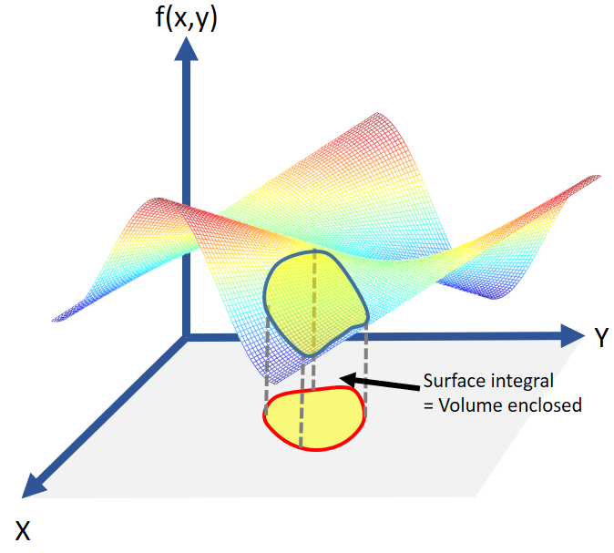
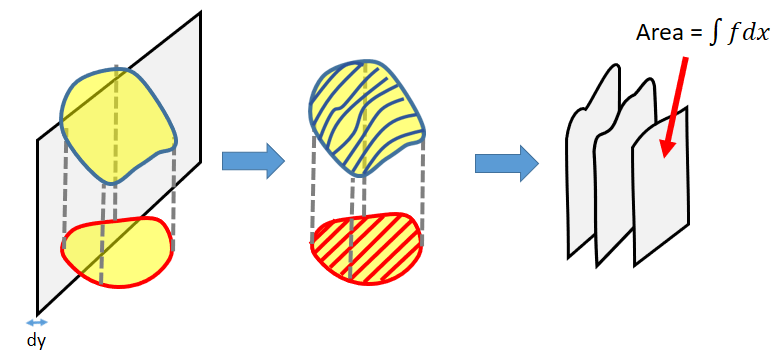
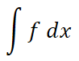
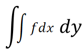
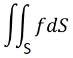
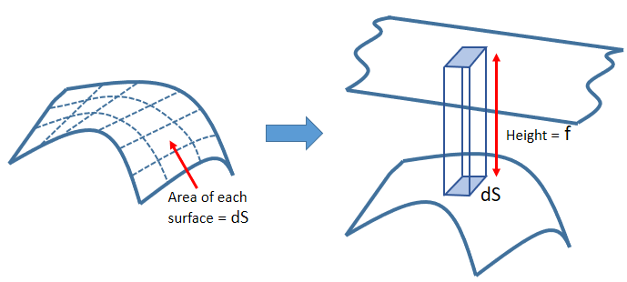
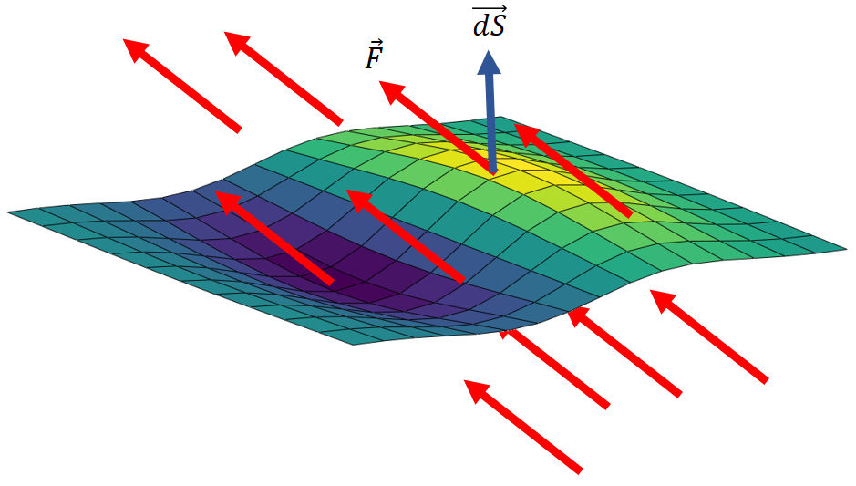
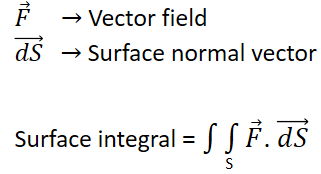

HOME BLOG EBOOKS ABOUT CONTACT SHOP
For scalar functions, the surface integral is nothing but the volume enclosed by a surface and its projection on the function. The simplest case is when the area is planar or 2-dimensional as shown.

To find the surface integral in such a case, the surface is sliced using planes of small thickness either along the x-axis or the y-axis (along the x-axis in the figure). That way we can convert the surface into a bunch of curves or lines, allowing us to use the line integral.

The sliced area is given by the line integral:

Here dl = dx, since the lines are straight and parallel to the x-axis. To obtain the volume, all we need to do is to combine these areas, which can be done by integrating them with respect to dy. Therefore, the surface integral is given by:

This equation is called the double integral.
But not all surfaces are planar, some surfaces maybe spherical or conical or anything else, in such a case we would require a more generalized method to find the surface integral than the double integral. The idea here is to divide the whole surface into small differential surfaces each of area dS, then the volume corresponding to each differential area is the volume of the French fry shaped element (parallelopiped) above it. The volume of this element is fdS and hence the volume corresponding to the entire surface is simply the integral of this differential volume.


The surface integral of vector field can be interpreted as the amount of field flowing (think of it as fluid flow) through a surface per unit time. When the vector field is normal to the surface, the flow will be maximum and when the surface is parallel to the surface, there will be no flow. So, to calculate the total field flowing through the surface, all we need to do is to add up the component of the vector field that are perpendicular to the surface.

Hence the surface integral of a vector field is given by:
